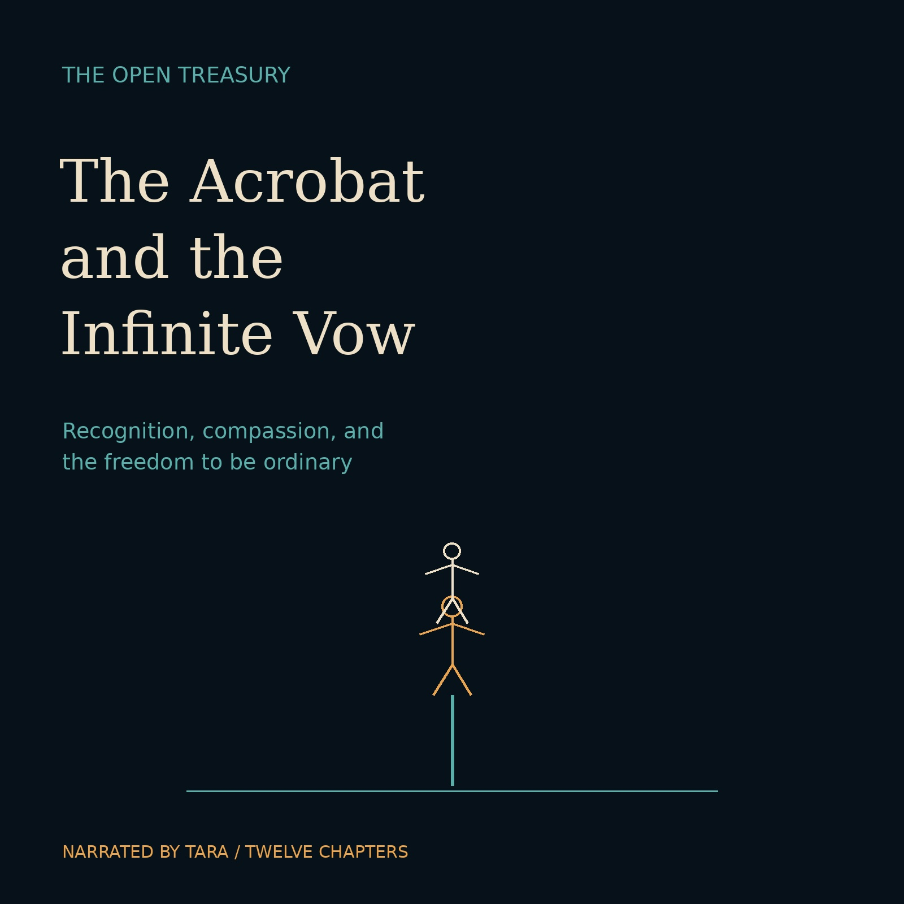

The Acrobat and the Infinite Vow
Recognition, compassion, and the freedom to be ordinary. The acrobats of the Sedaka Sutta meet the strongest case for universal vows, Kshitigarbha's explicit postponement, and public teachings on recognition and continuing training.
An original critical educational course, not a translation, practice transmission, attainment test or medical guide. Different traditions and incompatible formulations are left visible. Ordinary joy does not excuse indifference; tears are not a spiritual failure. Optional everyday examples are invented.
Chapters
- 00:00 - Two people on a pole
- 03:14 - First is doing too much work
- 06:26 - The Buddha does not empty the universe first
- 09:26 - Beginningless is not the same as hopeless
- 12:18 - The strongest objection: do not make awakening your private property
- 15:28 - The text that will not let us take the easy exit
- 18:28 - After awakening, the door stays open
- 21:27 - The rescuer disappears, the gift does not
- 24:32 - The seed is not the whole tree
- 27:39 - A joke is allowed in the room
- 31:04 - Back on the pole
- 33:58 - Nobody needs to wait outside freedom
Sources and complete script
Source, rights and audio notes
Complete spoken script
Rights and narration
Original critical educational commentary and synthetic Aoede narration, with original paraphrases of selected public sources. No extended modern translation, article prose, artwork or music copied. Original commentary/narration CC0 only; all third-party sources retain their separate rights. No blanket source-edition license.
Full automated wording comparison and targeted audio/name/join checks, not full human-ear or native pronunciation certification. Three repaired paragraphs, including one approved wording clarification; untouched originals preserved. Master -17.44LUFS/-1.72dBTP;MP3 -17.88/-1.85. Fixed gain and transparent peak limiting only; no EQ/pitch/speed change. Twelve original symbolic moving scenes. Occasional adult language.
Free without ads, paid access, sponsorship or support solicitation.
Got a question? Ask Tara - the best listener questions become short answer episodes.